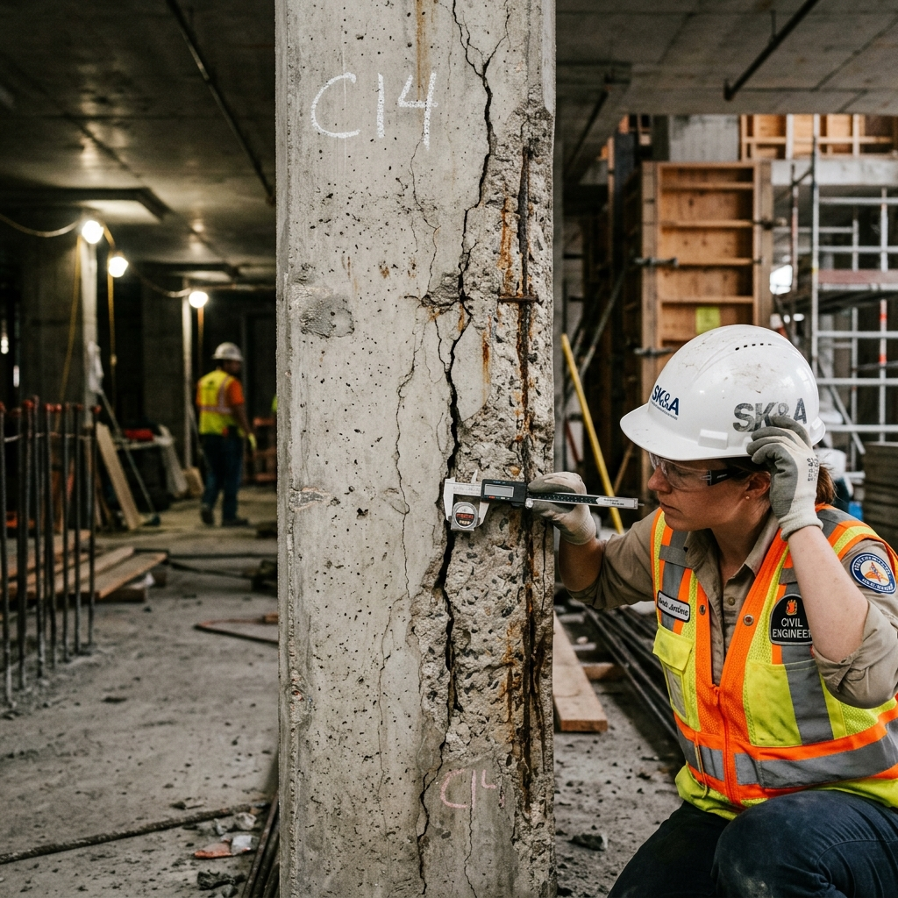
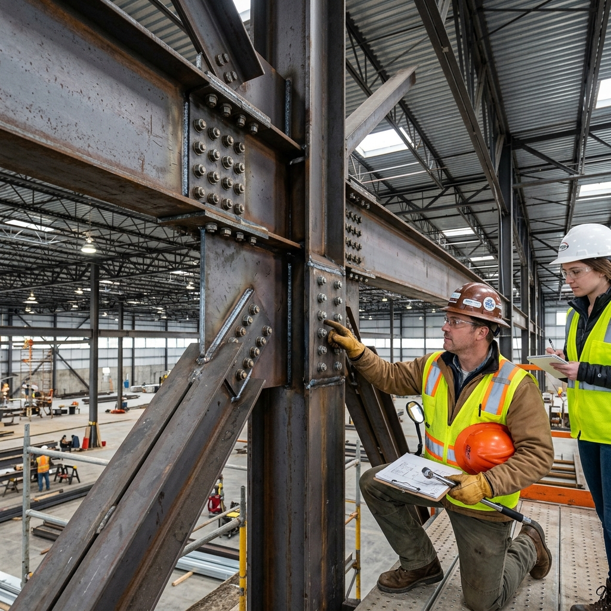

Halo, perkenalkan saya
Shofi Naila Azzahra
|
Mahasiswa D4 Teknik Perawatan dan Perbaikan Gedung di Politeknik Negeri Semarang. Memiliki minat pada bidang konstruksi, Quantity Surveyor, Quality Control, K3/HSE, serta Maintenance Gedung.

Tentang Saya
Saya merupakan mahasiswa D4 Teknik Perawatan dan Perbaikan Gedung di Politeknik Negeri Semarang yang memiliki minat pada bidang konstruksi, Quantity Surveyor, Quality Control, keselamatan dan kesehatan kerja (K3/HSE), serta Maintenance Gedung.
Memiliki pengalaman dalam membantu inspeksi pekerjaan lapangan, dokumentasi teknis, pengisian checklist mutu. Terbiasa bekerja dengan teliti, disiplin, dan mengikuti prosedur kerja, serta mampu bekerja sama dalam tim maupun secara mandiri. Memiliki kemauan belajar yang tinggi dan siap mengembangkan kemampuan di lingkungan kerja profesional.
- Nama: Shofi Naila Azzahra
- Bidang: Teknik Sipil
- Spesialisasi: Perawatan Gedung
- Lokasi: Indonesia

Keahlian Utama
Inspeksi Gedung
Melakukan evaluasi kondisi visual dan struktural pada bangunan eksisting untuk mendeteksi kerusakan secara dini.
AutoCAD & Pemodelan
Menggambar dan merancang detail struktur serta metode perbaikan teknis menggunakan perangkat lunak CAD.
Manajemen Perawatan
Menyusun jadwal dan estimasi Rencana Anggaran Biaya (RAB) untuk pemeliharaan rutin maupun perbaikan berat.
Analisis Struktur
Memahami mekanika teknik dan respons material terhadap beban untuk menentukan metode perbaikan yang paling aman.
Proyek & Studi Kasus

Analisis Kerusakan Struktur Beton
Studi kasus identifikasi keretakan pada kolom utama gedung perkantoran dan perumusan usulan metode retrofitting.
RAB Pemeliharaan Fasilitas
Perencanaan Rencana Anggaran Biaya untuk pemeliharaan berkala atap dan fasad bangunan publik.

Desain Perkuatan Struktur Baja
Pemodelan ulang dan perancangan detail sambungan baja pada struktur gudang yang mengalami penurunan kapasitas beban.
Hubungi Saya
Tertarik untuk berdiskusi tentang teknik sipil, konsultasi perawatan gedung, atau tawaran kolaborasi? Jangan ragu untuk menghubungi saya.